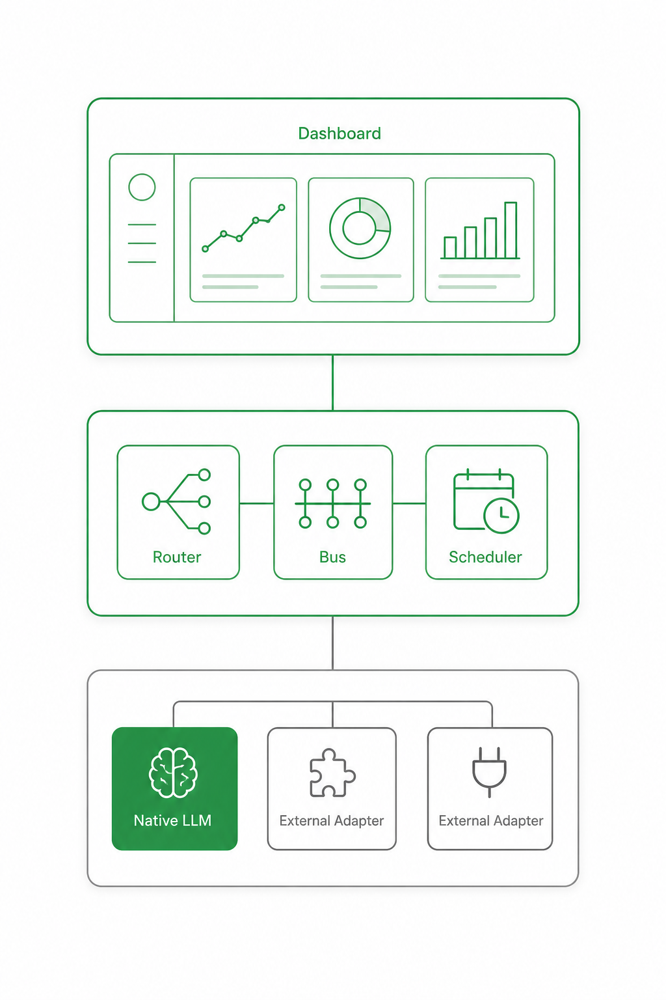

Kraken gives agents a room. b3os gives them an operating doctrine.
'AI 에이전트 채팅툴'이 아니라 self-hosted AI team operating system(직접 호스팅하는 AI 팀 운영체계). 유료 가치는 모델 성능이 아니라 신뢰·운영·감사·셀프서비스 영입·업데이트/지원. 본체는 대시보드 기반 운영(영입·OT·설정·과제·보고)이고, 텔레그램·슬랙은 대화 창구일 뿐이다.
경쟁(크라켄)은 협업 '방'만 준다. b3os는 팀이 일하는 규칙과 운영체계 — 운영 도크트린(operating doctrine, 운영 교범) — 을 함께 제공한다.

self-hosted + 상용 라이선스. b3os는 운영 레이어에만 과금하고, LLM API·호스팅 비용은 고객이 직접 부담한다.
설계 원칙 = no-Bill 셀프서비스: 고객이 곧 admin이고, 프로비저닝까지 대시보드가 자동화한다.
상단 대시보드 UI → 중간 라우터·버스·스케줄러 → 하단 네이티브 런타임 + 외부 런타임 어댑터.
단체방에서 필요한 1명(논의면 여럿)만 깨운다. 채택 엔진 = routeTeamMessageHybrid (regex + LLM, 2026-05-24).
launchd 매번 spawn 방식을 버리고, 서버 내 in-process 워커가 주기 잡을 발사한다.
메시지 insert → 수신자 자동 wake. delivery(실전달)와 visibility(표시)를 분리하고, anti-pingpong 가드로 무한 루프를 막는다.
외부 런타임 없이 팀원을 구동. 구독 OAuth는 3rd-party 불가이므로 합법 경로만 쓴다.
피해야 할 말 = '우리도 agent builder'. builder(만드는 도구)와 run layer(운영하는 레이어)를 명확히 구분한다.
b3os 운영·아키텍처 핵심 용어.